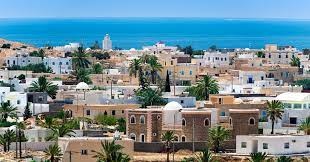

Nearly all of the people in our great country are Muslims. Our official language is Arab, and the majority of people in our country would agree. About 70% of us live in towns and cities.
We are a Parliamentary Republic. Our current president is Kais Saied, and has been since the great year of 2019.
Surprisingly, only about 15% of our population work in the agriculture industry. Our main crops are wheat, barley, and potatoes.
Tunisia is located near Algeria and Libya. Multiple chains of mountains go through Tunisia, and our largest river runs through the north. The central area of our country is a mainly flat area. Our country has mild winters and hot summers.
Tunisia was the place where the Arab Spring began. This was because a man had been mistreated and disregarded by the government, so he set himself on fire in protest. When the word spread, all throughout the middle east governments were toppled and better pathways for the citizens were created. This all began on Dec. 17, 2010.
Britannica Kids, Kids World Travel Guide, Easy Science for Kids, Ducksters, Kiddle